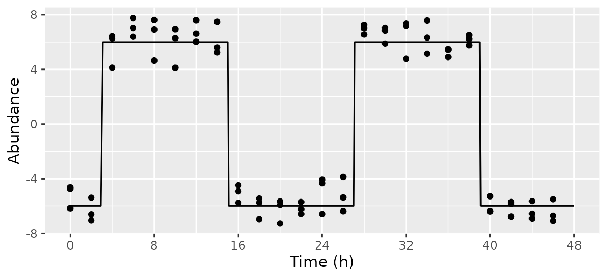
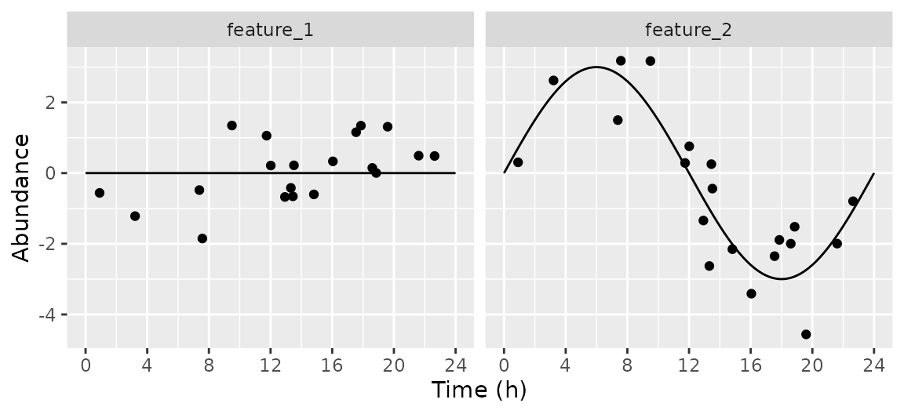
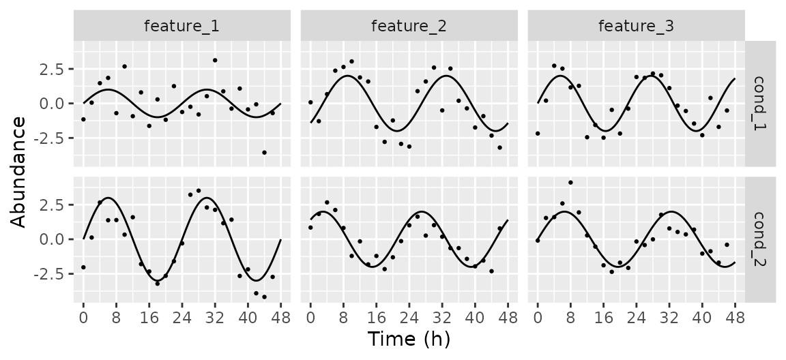
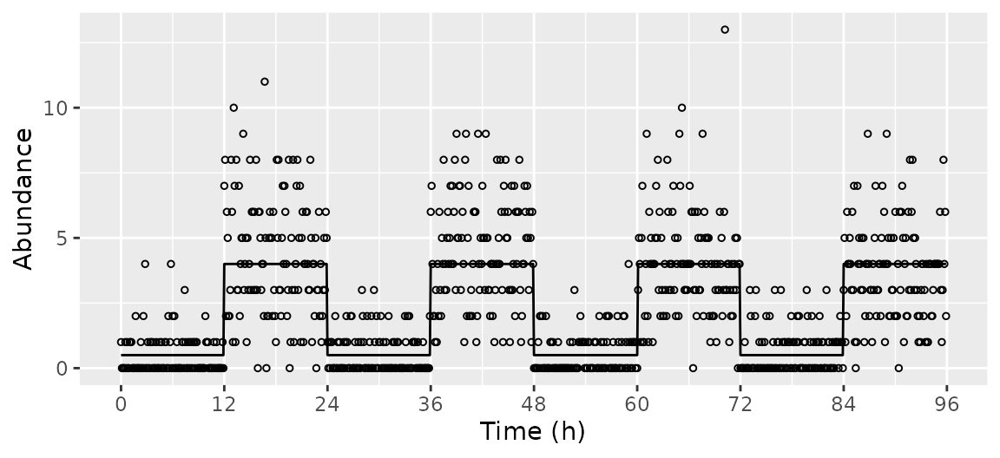

Evenly-spaced timepoints
featureGroups = data.table(amp = c(0, 3, 6), phase = c(0, 0, 6),
rhyFunc = c(cos, cos, sin), fracFeatures = c(0.1, 0.8, 0.1))
simData = simphony(featureGroups)
mergedData = mergeSimData(simData)
expectedTrend = getExpectedAbund(simData$featureMetadata, times = seq(0, 48, 0.25))
plotFeatures = c('feature_01', 'feature_05', 'feature_10')
ggplot() +
facet_wrap(~ feature) +
geom_line(data = expectedTrend[feature %in% plotFeatures], aes(x = time, y = mu)) +
geom_point(data = mergedData[feature %in% plotFeatures], aes(x = time, y = abund)) +
scale_x_continuous(breaks = seq(0, 48, 8)) +
labs(x = 'Time (h)', y = 'Abundance')
ggplot() +
geom_point(data = simData$featureMetadata, aes(x = factor(amp0), y = factor(feature))) +
labs(x = 'Amplitude', y = 'Feature')
Custom rhythm function
featureGroups = data.table(amp = 6, phase = -3, rhyFunc = function(x) sign(sin(x)))
simData = simphony(featureGroups)
mergedData = mergeSimData(simData)
expectedTrend = getExpectedAbund(simData$featureMetadata, times = seq(0, 48, 0.1))
ggplot() +
geom_line(data = expectedTrend[feature %in% plotFeatures], aes(x = time, y = mu)) +
geom_point(data = mergedData[feature %in% plotFeatures], aes(x = time, y = abund)) +
scale_x_continuous(breaks = seq(0, 48, 8)) +
labs(x = 'Time (h)', y = 'Abundance')
Specified timepoints
featureGroups = data.table(amp = c(0, 3))
simData = simphony(featureGroups, timepointsType = 'specified', nFeatures = nrow(featureGroups),
timepoints = c(seq(0, 22, 2), seq(24, 42, 6)))
mergedData = mergeSimData(simData)
expectedTrend = getExpectedAbund(simData$featureMetadata, times = seq(0, 48, 0.25))
ggplot() +
facet_wrap(~ feature) +
geom_line(data = expectedTrend, aes(x = time, y = mu)) +
geom_point(data = mergedData, aes(x = time, y = abund)) +
scale_x_continuous(breaks = seq(0, 48, 8)) +
labs(x = 'Time (h)', y = 'Abundance')
Random timepoints
featureGroups = data.table(amp = c(0, 3))
simData = simphony(featureGroups, timepointsType = 'random', nFeatures = nrow(featureGroups),
timeRange = c(0, 24), nSamplesPerCond = 20)
mergedData = mergeSimData(simData)
expectedTrend = getExpectedAbund(simData$featureMetadata, times = seq(0, 24, 0.25))
ggplot() +
facet_wrap(~ feature) +
geom_line(data = expectedTrend, aes(x = time, y = mu)) +
geom_point(data = mergedData, aes(x = time, y = abund)) +
scale_x_continuous(breaks = seq(0, 24, 4)) +
labs(x = 'Time (h)', y = 'Abundance')
Time-dependent amplitude and base
featureGroups = data.table(amp = c(function(tt) 3, function(tt) 3 * 2 ^ (-tt / 24)),
base = c(function(tt) tt / 12, function(tt) 0))
simData = simphony(featureGroups, nFeatures = nrow(featureGroups))
mergedData = mergeSimData(simData)
expectedTrend = getExpectedAbund(simData$featureMetadata, times = seq(0, 48, 0.25))
ggplot() +
facet_wrap(~ feature) +
geom_line(data = expectedTrend, aes(x = time, y = mu)) +
geom_point(data = mergedData, aes(x = time, y = abund)) +
scale_x_continuous(breaks = seq(0, 48, 8)) +
labs(x = 'Time (h)', y = 'Abundance')
Differential rhythmicity between conditions
featureGroupsList = list(
data.table(amp = c(1, 2, 2), phase = c(0, -3, 0), period = c(24, 24, 22)),
data.table(amp = c(3, 2, 2), phase = c(0, 3, 0), period = c(24, 24, 26)))
simData = simphony(featureGroupsList, nFeatures = nrow(featureGroupsList[[1]]))
mergedData = mergeSimData(simData)
expectedTrend = getExpectedAbund(simData$featureMetadata, times = seq(0, 48, 0.25))
ggplot() +
facet_grid(cond ~ feature) +
geom_line(data = expectedTrend, aes(x = time, y = mu)) +
geom_point(data = mergedData, aes(x = time, y = abund), size = 0.5) +
scale_x_continuous(breaks = seq(0, 48, 8)) +
labs(x = 'Time (h)', y = 'Abundance')
Controlling negative binomial dispersion and base
featureGroups = data.table(amp = 3, base = c(4, 6, 8))
dispFunc = function(x) 3 * defaultDispFunc(x)
simData = simphony(featureGroups, interval = 4, nFeatures = nrow(featureGroups),
family = 'negbinom', dispFunc = dispFunc)
mergedData = mergeSimData(simData)
expectedTrend = getExpectedAbund(simData$featureMetadata, times = seq(0, 48, 0.25))
ggplot(expectedTrend) +
facet_wrap(. ~ factor(base0)) +
geom_line(data = expectedTrend, aes(x = time, y = mu)) +
geom_point(data = mergedData, aes(x = time, y = log2(abund + 1))) +
scale_x_continuous(breaks = seq(0, 48, 8)) +
labs(x = 'Time (h)', y = expression(log[2] * '(abundance + 1)'))
Poisson sampling at high resolution
featureGroups = data.table(amp = 1, base = 0,
rhyFunc = function(x) ifelse(x %% (2 * pi) < pi, 0.5, 4))
simData = simphony(featureGroups, timeRange = c(0, 24 * 4), interval = 0.1,
nReps = 1, nFeatures = 1, family = 'poisson')
mergedData = mergeSimData(simData)
expectedTrend = getExpectedAbund(simData$featureMetadata,
sampleMetadata = simData$sampleMetadata)
ggplot() +
geom_line(data = expectedTrend, aes(x = time, y = mu)) +
geom_point(data = mergedData, aes(x = time, y = abund), shape = 21, size = 1) +
scale_x_continuous(breaks = seq(0, 24 * 4, 12)) +
labs(x = 'Time (h)', y = 'Abundance')